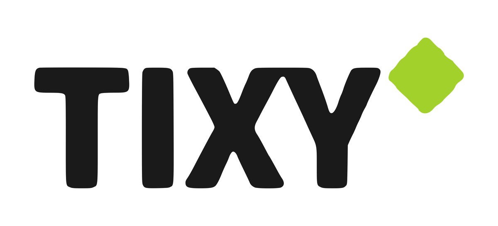
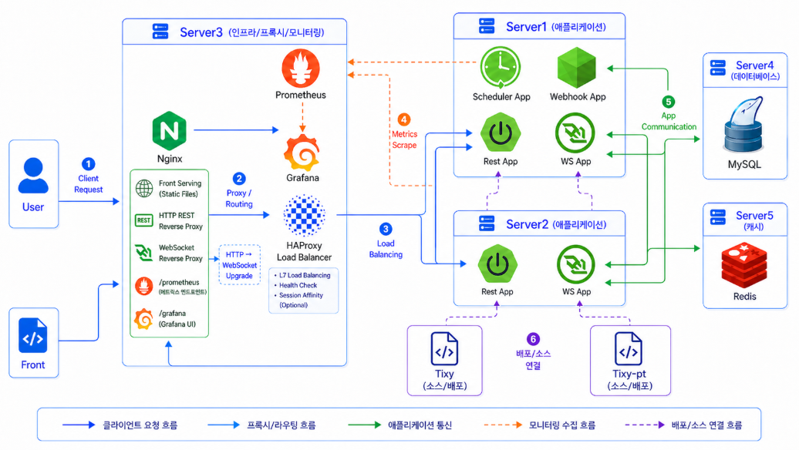
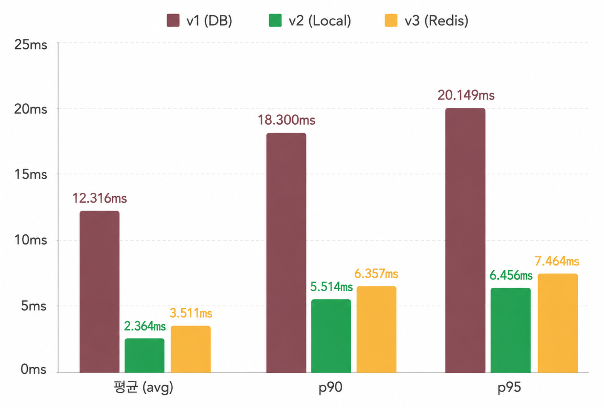
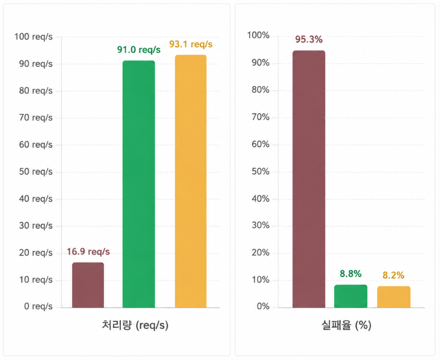
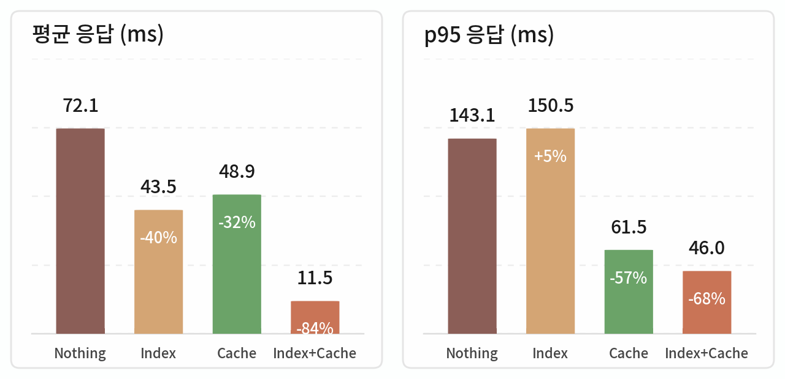
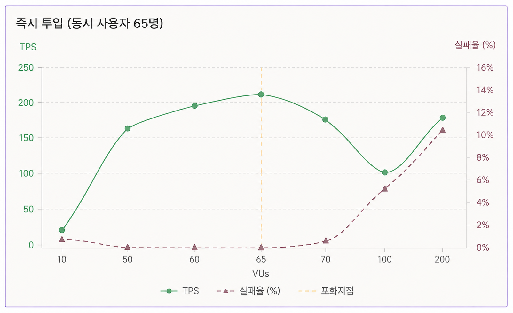
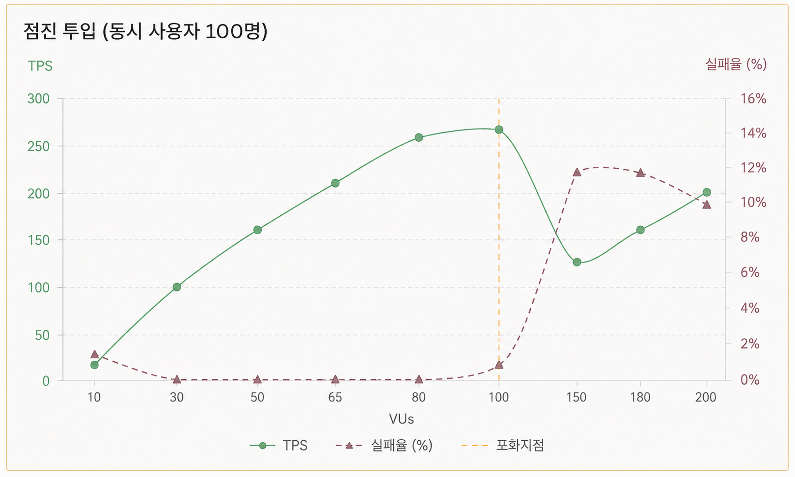

events · event_sessions · ticket_types · venues), 5만 건 이벤트 데이터. 옵티마이저가 venues를 드라이빙 테이블로 잡으며 풀스캔에 가까운 동작.02 · Backend Portfolio
공연 예매 티켓팅 플랫폼 · 목록 조회 API 성능 최적화. 5만 건의 공연 데이터, 4개 테이블 JOIN 쿼리 — 인덱스와 캐시를 단계적으로 측정해 평균 응답 −84% · 처리량 5.5배까지 끌어올린 작업 기록.

| 기간 | 8주 · 2026.03 — 2026.04 |
|---|---|
| 팀 | 백엔드 4명 |
| 역할 | 목록 조회 API 성능 최적화 — 인덱스 설계 · 캐시 전략(v1/v2/v3) · k6 부하 테스트 검증 |
| Links | GitHub ↗ |
공연 예매 티켓팅 플랫폼. 검색 API에 인덱스와 캐시를 단계적으로 적용해 응답 시간과 처리량이 어떻게 달라지는지 측정한 작업 기록.
| 모듈 구성 | 멀티 모듈 — tixy(메인, Java 17 · Spring Boot 3.5) / tixy-pt(지원·AI, Java 21 · Spring Boot 4.0) / tixy-watcher(결제 와처, Node.js) / tixy-batch(배치, Java 17 · Spring Boot 4.0) |
|---|---|
| 인프라 | 5-Server 구성 — Nginx(프록시) + HAProxy(LB) + App × 2 + MySQL + Redis · Prometheus / Grafana / Micrometer 모니터링 |

클라이언트 요청은 Nginx(정적 서빙 · 프록시) → HAProxy(L7 로드밸런서) → App × 2로 흐르고, MySQL·Redis는 별도 서버로 분리. Prometheus가 앱 지표를 스크레이프해 Grafana로 시각화합니다.
공연 목록 조회 API에 인덱스와 캐시를 각각 붙여 보고, 마지막에 둘을 합쳐 k6 부하 테스트로 검증했습니다.
4-Table JOIN 쿼리에 대한 인덱스 조합 비교 · EXPLAIN 분석.
v1(DB) / v2(Caffeine) / v3(Redis) 세 버전을 같은 jOOQ 쿼리로 놓고 측정.
events · event_sessions · ticket_types · venues), 5만 건 이벤트 데이터. 옵티마이저가 venues를 드라이빙 테이블로 잡으며 풀스캔에 가까운 동작.events(category, event_status, open_date) + ticket_types(event_session_id, ticket_type_status, price).같은 jOOQ 쿼리를 호출하는 엔드포인트를 세 버전으로 만들어 캐시 레이어만 다르게 두고 비교.
| v1 | 캐시 없음 (DB 직접 조회) |
|---|---|
| v2 | Caffeine 로컬 캐시 (maximumSize=100, expireAfterWrite=5m) |
| v3 | Redis 분산 캐시 (GenericJackson2JsonRedisSerializer) |


k6로 Nothing / Index / Cache / Index+Cache 4가지 조합의 평균 · p95 응답 시간 비교.



같은 쿼리를 v1/v2/v3 세 엔드포인트로 분리하고, JVM warm-up 10회 · 시나리오마다 10회 평균으로 측정한 뒤에야 "어느 쪽이 더 빠르냐"를 숫자로 답할 수 있는 상태가 됐습니다. Index만 봤을 때 91% 개선처럼 보였지만, 시나리오를 넓히고 나서야 조건 조합에 따라 p95가 오히려 나빠질 수 있다는 걸 발견했고 — 측정을 신뢰하려면 측정 자체를 먼저 의심해야 한다는 걸 체득한 프로젝트였습니다.